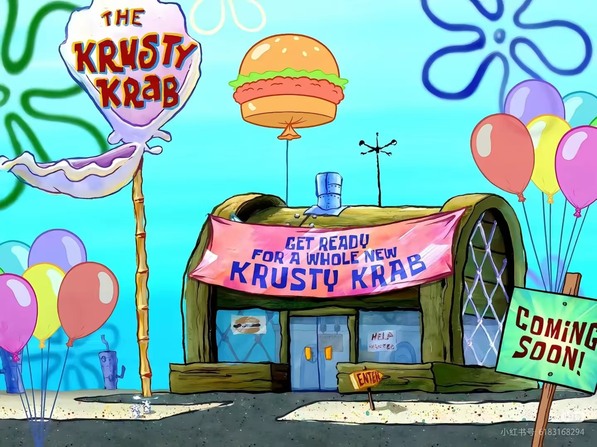
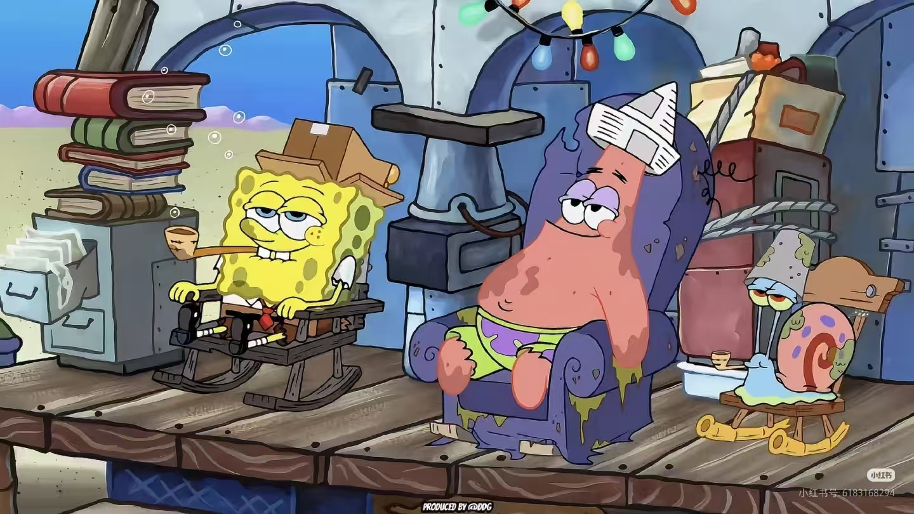

比基尼海滩的故事

神秘的海底世界

在太平洋深处的比基尼环礁下，有一个充满欢乐的海底城市——比基尼海滩。这里的居民们过着丰富多彩的生活，他们有自己的房子、工作和娱乐场所。
蟹堡王餐厅

蟹堡王是比基尼海滩最著名的快餐店，由蟹老板经营。海绵宝宝在这里担任厨师，专门制作美味的蟹堡。这里的秘方配方是整个海底世界最受欢迎的美食秘密。
日常生活

在比基尼海滩，居民们喜欢在果冻鱼捕捉场抓水母、在贝壳城市购物、在海底公园玩耍。这里的一切都充满了欢乐与温馨，是一个充满奇妙冒险的地方。